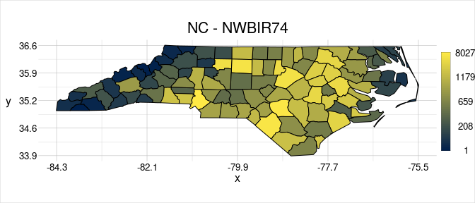

Overview
The geometr package provides tools that generate and process easily accessible and tidy geometric shapes (of class geom). Moreover, it aims to improve interoperability of spatial and other geometric classes. Spatial classes are typically a collection of geometric shapes (or their vertices) that are accompanied by various metadata (such as attributes and a coordinate reference system). Most spatial classes are thus conceptually quite similar, yet a common standard lacks for accessing features, vertices or the metadata. geometr fills this gap by providing tools that
- produce an identical output for the same metadata of different classes (via so-called getters) and
- use an identical input to write to various classes that originally require different input (via so-called setters).
Installation
- Install the official version from CRAN:
install.packages("geometr")or the latest development version from github:
devtools::install_github("EhrmannS/geometr")Examples
Create a geom
library(geometr)
# ... from other classes
library(sf)
nc_sf <- st_read(system.file("shape/nc.shp", package="sf"), quiet = TRUE)
nc_geom <- gc_geom(input = nc_sf)Metadata of different classes can be extracted in interoperable quality (i.e. the same metadata in different objects/classes have the same names and the same arrangement).
getExtent(x = nc_geom)
#> # A tibble: 2 × 2
#> x y
#> <dbl> <dbl>
#> 1 -84.3 33.9
#> 2 -75.5 36.6
getFeatures(x = nc_geom)
#> # A tibble: 108 × 16
#> fid gid AREA PERIMETER CNTY_ CNTY_ID NAME FIPS FIPSNO CRESS_ID BIR74
#> * <int> <int> <dbl> <dbl> <dbl> <dbl> <chr> <chr> <dbl> <int> <dbl>
#> 1 1 1 0.114 1.44 1825 1825 Ashe 37009 37009 5 1091
#> 2 2 2 0.061 1.23 1827 1827 Allegh… 37005 37005 3 487
#> 3 3 3 0.143 1.63 1828 1828 Surry 37171 37171 86 3188
#> 4 4 4 0.07 2.97 1831 1831 Currit… 37053 37053 27 508
#> 5 5 4 0.07 2.97 1831 1831 Currit… 37053 37053 27 508
#> 6 6 4 0.07 2.97 1831 1831 Currit… 37053 37053 27 508
#> 7 7 5 0.153 2.21 1832 1832 Northa… 37131 37131 66 1421
#> 8 8 6 0.097 1.67 1833 1833 Hertfo… 37091 37091 46 1452
#> 9 9 7 0.062 1.55 1834 1834 Camden 37029 37029 15 286
#> 10 10 8 0.091 1.28 1835 1835 Gates 37073 37073 37 420
#> # … with 98 more rows, and 5 more variables: SID74 <dbl>, NWBIR74 <dbl>,
#> # BIR79 <dbl>, SID79 <dbl>, NWBIR79 <dbl>geometr only knows the feature types point, line, polygon and grid (a systematic lattice of points). In contrast to the simple features standard, there are no MULTI* features. The way simple features have been implemented in R has the consequence that certain information can only be stored in a rather inefficient and cumbersome way. Think of a set of polygons that has individual attributes at the POLYGON level, but also attributes at the group (MULTIPOLYGON) level, i.e., where all polygons of that group have the same value of the respective attributes. It is impossible to store this information in a single sf object, other than in a POLYGON that contains the respective attributes as duplicates (which may be very inefficient in large objects).
The backbone of a geom are three tables, one for points, one for features and one for groups of features, the latter two of which can be provided with ancillary information (attributes). Each point is stored with a feature ID (fid) that relates it to a feature (and its attributes) and each feature is stored with a group ID (gid) that relates it to a group (and its attributes). Eventually this results in a tidier data-structure with easier access than sp or sf objects and with higher versatility.
# when using the group = TRUE argument, the attributes of MULTI*-feature are
# stored in the group attribute table of a geom
nc_geom <- gc_geom(input = nc_sf, group = TRUE)
currituck <- gt_filter(obj = nc_geom, gid == 4)
getFeatures(x = currituck)
#> # A tibble: 3 × 2
#> fid gid
#> <int> <int>
#> 1 4 4
#> 2 5 4
#> 3 6 4
getGroups(x = currituck)
#> # A tibble: 1 × 15
#> gid AREA PERIMETER CNTY_ CNTY_ID NAME FIPS FIPSNO CRESS_ID BIR74 SID74
#> <int> <dbl> <dbl> <dbl> <dbl> <chr> <chr> <dbl> <int> <dbl> <dbl>
#> 1 4 0.07 2.97 1831 1831 Curritu… 37053 37053 27 508 1
#> # … with 4 more variables: NWBIR74 <dbl>, BIR79 <dbl>, SID79 <dbl>,
#> # NWBIR79 <dbl>
# and new attributes can be set easily,
newTable <- data.frame(fid = c(1:108),
attrib = rnorm(108))
(nc_geom <- setFeatures(x = nc_geom, table = newTable))
#> geom polygon
#> 100 groups | 108 features | 2529 points
#> crs +proj=longlat +datum=NAD27 +no_defs
#> attributes (features) attrib
#> (groups) AREA, PERIMETER, CNTY_, CNTY_ID, NAME, FIPS, FIPSNO, CRESS_ID, BIR74, ...
#> tiny map 36.59
#> ◌ ○ ◌ ○
#> ○ ○ ○ ○
#> ◌ ◌ ○ ◌
#> -84.32 ◌ ◌ ◌ ◌ -75.46
#> 33.88Moreover, a geom also allows to store raster information in the same data format. A raster is a systematic lattice of points/pixels with one or more layers, where each pixel exists in each layer, possibly with different values, i.e., from different attributes. The raster attribute table (RAT) is basically already the groups attribute table of a geom, where a group of pixels that have the same value are associated to attributes this class has in common. In this case, however, the features (single pixels) don’t have to be associated to a group ID, as their feature values are at the same time the group values.
str(gtGeoms$polygon, max.level = 2)
#> Formal class 'geom' [package "geometr"] with 8 slots
#> ..@ type : chr "polygon"
#> ..@ name : chr "polygon_geom"
#> ..@ point : tibble [11 × 3] (S3: tbl_df/tbl/data.frame)
#> ..@ feature: tibble [2 × 2] (S3: tbl_df/tbl/data.frame)
#> ..@ group : tibble [2 × 1] (S3: tbl_df/tbl/data.frame)
#> ..@ window : tibble [2 × 2] (S3: tbl_df/tbl/data.frame)
#> ..@ crs : chr NA
#> ..@ history: list()
str(gtGeoms$grid$categorical, max.level = 2)
#> Formal class 'geom' [package "geometr"] with 8 slots
#> ..@ type : chr "grid"
#> ..@ name : chr "categorical_grid_geom"
#> ..@ point : tibble [3 × 2] (S3: tbl_df/tbl/data.frame)
#> ..@ feature: tibble [726 × 2] (S3: tbl_df/tbl/data.frame)
#> ..@ group : tibble [9 × 2] (S3: tbl_df/tbl/data.frame)
#> ..@ window : tibble [2 × 2] (S3: tbl_df/tbl/data.frame)
#> ..@ crs : chr NA
#> ..@ history: list()geometr comes with the visualise function, which makes nice-looking diagnostic spatial plots, that show explicit values whenever possible. For example, it does not create artificial (“nice”) bins for the x and y axis or the values values shown in the plot, but provides the range of values explicitly. Moreover, you can easily set plot titles without much effort.
visualise(`North Carolina` = nc_geom)You can use quick options to scale plot parameters to the attributes of the geom to modify which aspects of an object should be shown in the plot, for example when scaling fillcol to NWBIR74.

The @window slot of a modified geom is by default automatically updated.
visualise(`Currituck` = currituck, linecol = "fid")Finally, cast a geom to another type simply by providing it in anchor of the respective type